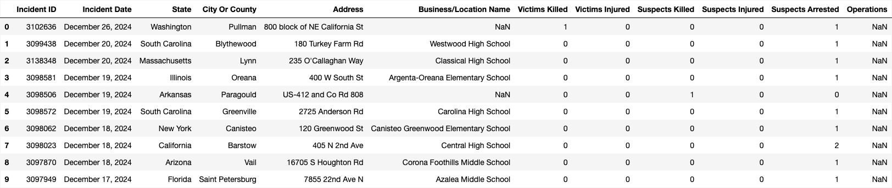

School Shootings
Sample Data
 Click here to view the full sample dataset.Training Data

Testing Data

Confusion Matrix

Conclusions
From the confusion matrix and performance metrics of the Naive Bayes Classifier applied to the school shooting dataset, we observe that the model achieves high overall accuracy (94%) but struggles to correctly identify actual shooting incidents. The classifier produces a large number of true negatives (2312), meaning it is effective at recognizing non-shooting events. However, the relatively low number of true positives (22) and high number of false negatives (65) indicate that many real incidents are missed.
This imbalance is reflected in the low recall score of 0.25, showing that only 25% of actual positive cases are correctly identified. The F1 score of 0.23 further highlights the model's difficulty in balancing precision and recall. These results suggest that while the Naive Bayes model is good at ruling out false alarms, it is not reliable for detecting true shooting incidents, which limits its usefulness in high-risk scenarios.
To improve its performance, the model may require more representative training data, better feature selection, or alternative algorithms that can handle class imbalance more effectively. This analysis underscores the importance of evaluating models beyond accuracy, especially when dealing with rare but critical events.